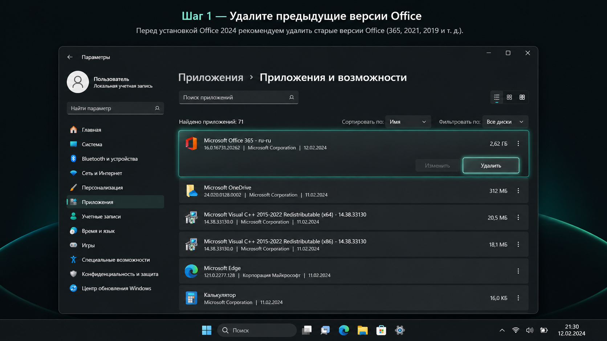
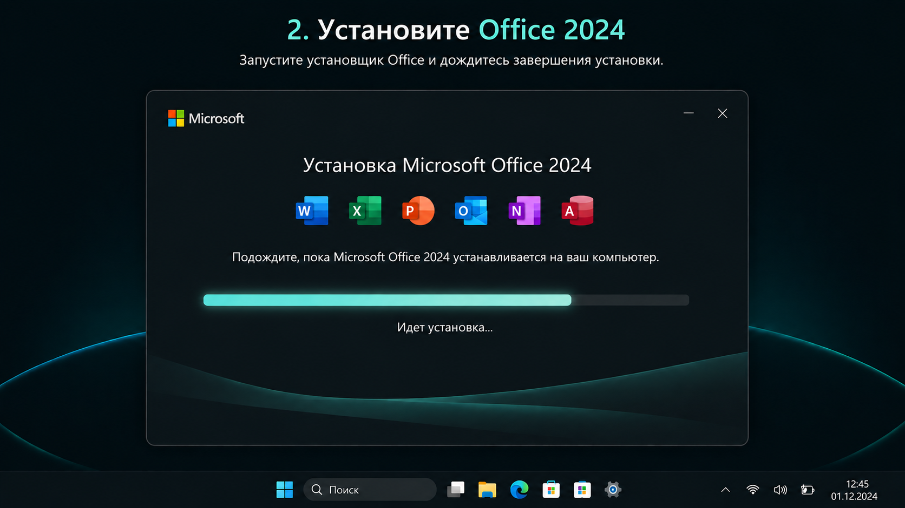
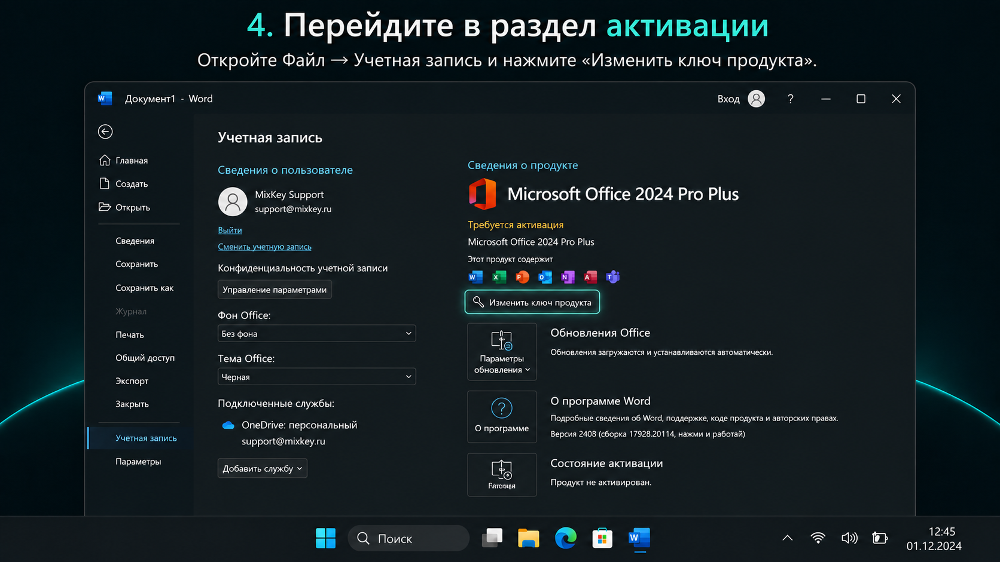
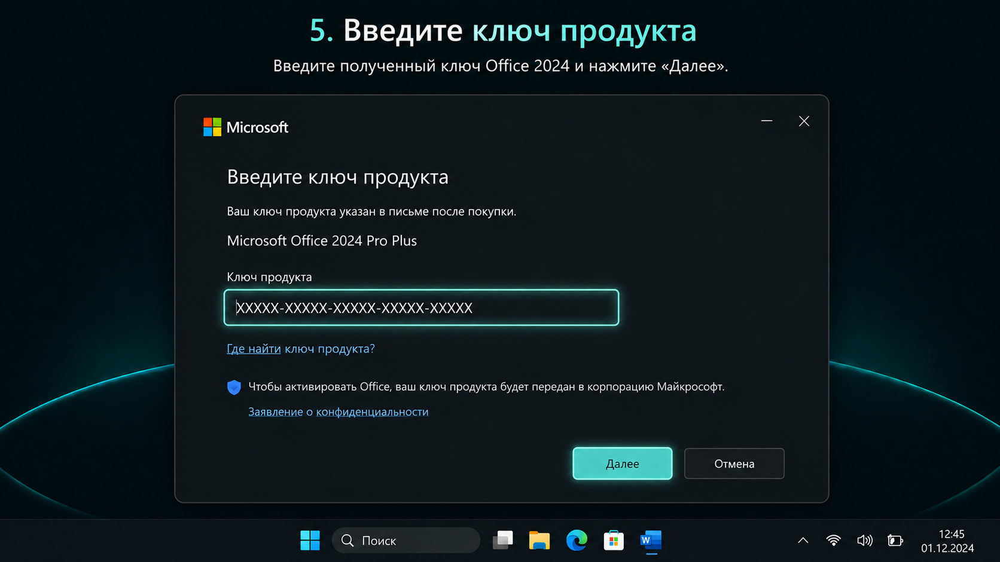
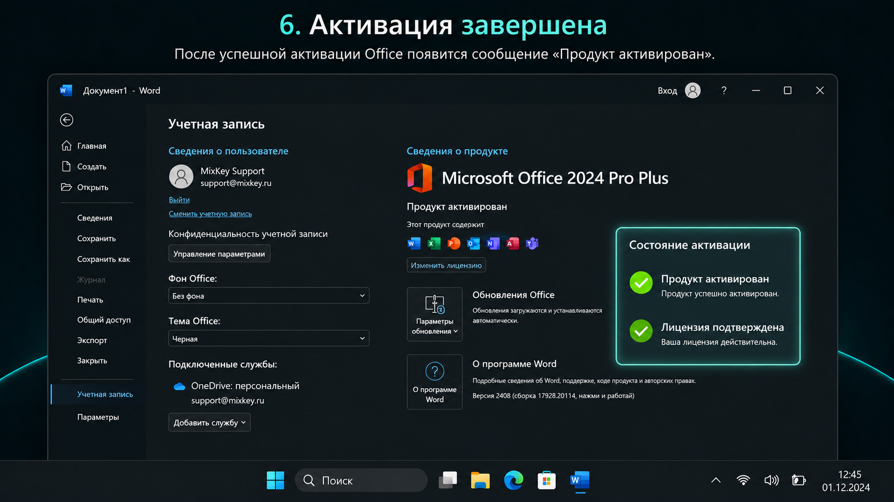

После покупки
Используйте эти разделы, чтобы скачать Office, удалить старые версии, установить продукт и решить типовые проблемы.
Office 2024
Сейчас поможем установить и активировать Microsoft Office 2024 Pro Plus LTSC. Обычно весь процесс занимает 5-10 минут.
Используйте эти разделы, чтобы скачать Office, удалить старые версии, установить продукт и решить типовые проблемы.
Если на компьютере уже установлен Microsoft Office, рекомендуется удалить его перед установкой новой версии. Если Office ранее не был установлен, переходите к следующему шагу.
Откройте Параметры Windows, перейдите в раздел Приложения, найдите Microsoft Office или Microsoft 365 и выберите Удалить.
Если Office не удаляется, после удаления остаются ошибки или новая установка не запускается, используйте официальное средство полного удаления Microsoft: Microsoft Support and Recovery Assistant. Загружайте его только с сайта Microsoft.
После удаления перезагрузите компьютер, затем переходите к установке Office 2024.

Скачайте установочный пакет Office 2024 по ссылке, полученной вместе с ключом.
После загрузки запустите установщик и дождитесь завершения установки.
Перед началом убедитесь, что у вас есть ключ продукта, полученный после покупки.
Если ссылка на установку не открывается или установочный файл недоступен, напишите в поддержку MixKey. Не скачивайте Office со случайных сайтов.

После установки откройте Word, Excel, PowerPoint или любое другое приложение Office.
При первом запуске программа может предложить войти в учетную запись Microsoft. Обычно этот шаг можно пропустить.

В открытом приложении нажмите Файл, перейдите в раздел Учетная запись и выберите Изменить ключ продукта.

Введите приобретенный ключ и подтвердите активацию.
Ключ должен соответствовать установленной версии Office 2024 Pro Plus LTSC.

После успешной активации в разделе Учетная запись появится информация о лицензии продукта.
Если статус не обновился сразу, закройте все приложения Office, перезагрузите компьютер и снова откройте Word или Excel.

Для активации ключом вход в Microsoft Account обычно не требуется. Если Office просит войти и вы не понимаете, что выбрать, сделайте скриншот и обратитесь в поддержку MixKey.
Не закрывайте окно с сообщением, пока не сделали скриншот. Так поддержка быстрее поймет, какой вариант предлагает Office.
Откройте Файл, затем Учетная запись и проверьте блок сведений о продукте. Если кнопки нет, сделайте скриншот этого окна и обратитесь в поддержку MixKey.
Проверьте, нет ли лишних пробелов, правильно ли введены символы и соответствует ли ключ установленной версии Office. Если сообщение повторяется, обратитесь в поддержку MixKey и приложите скриншот.
Ключ Office 2024 Pro Plus LTSC должен использоваться с соответствующей версией Office. Удалите другую версию Office, перезагрузите компьютер и установите Office 2024 заново.
Для активации ключом вход обычно не требуется. Если вы не понимаете, какой вариант выбрать, сделайте скриншот окна и обратитесь в поддержку MixKey.
Обратитесь в поддержку MixKey и приложите скриншот сообщения. Мы подскажем дальнейшие действия.
Закройте все приложения Office, перезагрузите компьютер и повторно откройте Word или Excel. Если статус не изменился, обратитесь в поддержку MixKey и приложите скриншот.
Подготовьте скриншот ошибки, последние 5 символов ключа и информацию о версии Office. После этого напишите в поддержку MixKey.
Не устанавливайте одновременно несколько разных версий Microsoft Office на один компьютер. Это может привести к конфликтам лицензий и ошибкам активации.